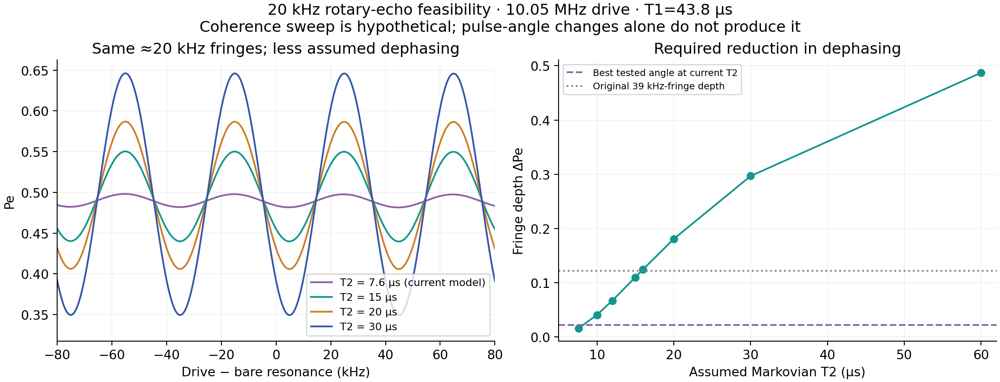

The practical limitation in the present model is dephasing. At fixed 39.30 μs, 395 π rotary-echo cycles, peak Rabi 10.05 MHz, T1=43.8 μs, and anharmonicity −216 MHz, reducing the modeled dephasing increases contrast while retaining approximately 20 kHz local fringe widths. All primary calculations use four transmon levels and exact segment exponentials.

| Assumed T2 (μs) | FWHM (kHz) | Depth ΔPe |
|---|---|---|
| 7.6 | 19.97 | 0.016 |
| 10 | 19.97 | 0.041 |
| 12 | 19.97 | 0.067 |
| 15 | 19.98 | 0.110 |
| 16 | 19.98 | 0.125 |
| 20 | 19.98 | 0.181 |
| 30 | 19.98 | 0.297 |
| 60 | 19.98 | 0.487 |
Depth 0.10 requires model T2≈14.30 μs; preserving the old 0.122 depth requires T2≈15.81 μs; depth 0.20 requires T2≈21.45 μs. These are hypothetical reductions of the Markovian dephasing rate, not measured improvements or values achieved by a pulse sequence.
A separate angle scan holds T2=7.6 μs, T1, and the drive fixed while adjusting duration to approximately 20 kHz. Of the tested half-angles from 0.4π to 1.1π, the best accepted depth is 0.0220, at half-angle 0.80π, 411 cycles and 32.716 μs; its width is 19.982 kHz. This is a limited family search, not proof of a globally optimal pulse. It does not deliver the contrast of the improved-coherence scenarios.
Widths are medians over resolved troughs within ±150 kHz, using the average of the two adjacent maxima as background. Asymmetric troughs without both half-depth crossings are rejected. The full grid spans ±250 kHz in 0.5 kHz steps. Selected cases halve the grid step and add a fifth transmon level. Phase flips are instantaneous, the drive is perfectly calibrated and noiseless, and no hardware bandwidth, drift, readout errors or colored noise spectrum is included.
The noise model is constant Lindblad relaxation and dephasing. Ramsey T2*, spin-echo T2, driven T1ρ and actual rotary-echo fringe-decay times are different observables; T1ρ must not simply replace T2 in this model. Measure these decays under the intended drive and determine the relevant noise spectrum before predicting benefits of a protection sequence. The simulations do not establish whether 7.6 μs describes the driven device.
For a DC detuning signal and noise coupling through the same σz operator, ordinary refocusing also removes the desired signal. Useful control must exploit a difference in noise/signal spectrum, operator, or independently accessible reference. This constraint is discussed in the sensing/error-correction literature. Rotary echoes reject drive errors, while their detuning response and coherence must be assessed together; see Aiello et al..
For this device, a concrete diagnostic is a matched-condition set of Ramsey, Hahn-echo, spin-locking and rotary-echo contrast-versus-duration scans, with interleaved short frequency references to identify slow drift. If drive noise dominates, optimize phase/amplitude control and echo angle while measuring the retained detuning slope. If resonator photon noise dominates, readout depletion, thermalization and filtering are candidate interventions. Identifying and suppressing thermal-photon dephasing has been demonstrated by Yan et al.; it has not been established as the limiting noise source here. No hardware work was performed.
All results and validation · Coherence sweep CSV · Angle sweep CSV · Population arrays · Provenance
PYTHONPATH=. .venv/bin/python scripts/scan_rotary_echo_protection.py